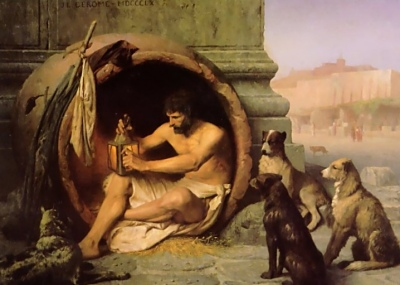

|  | The Laughable Stories of Bar-Hebraeusby Bar-Hebraeus, tr. E.A.W. Budge[1897] |
Bar-Hebraeus was a 13th century bishop of the Syriac Orthodox Church. Born in 1226 in what is now Turkey, Bar-Hebraeus was renowned as a scholar and theologian. He died in 1286 in Persia. Writing mostly in Syriac and Arabic, Bar Hebraeus wrote on philosophy, poetry, language, history and theology, including a comprehensive history of the world, the Chronicon Ecclesiasticum.
The Laughable Stories are a sequence of anecdotes categorized by the story-teller: starting with Persian, Indian, Hebrew and Christian sages, and including stories of Misers, Clowns, Thieves, and Animals and so on. Many of these stories have been included in compilations much further away in time and space. While a streak of sexism runs through the collection, in a couple of instances, the shoe is on the other foot. While many of these tales were probably pretty funny in the original 13th century cultural context, some of them will be totally mysterious to moderns.
Production notes: The translation, by E.A.W. Budge, who also did many of the Ancient Egyptian texts at this site, used a 19th century form of quotation in which quotes are inserted at the start of each line in multi-line quoted blocks; this has been modernized. This made the transcription difficult, since in some cases I had to make editorial decisions as to the location of the modern quotes. --J.B. Hare, October 9, 2009.
Title Page
Contents
Preface
Introduction
Introduction
List of the Chapters
The First Chapter: Profitable Sayings of the Greek Philosophers
The Second Chapter: Profitable Sayings of the Persian Sages
The Third Chapter: Profitable Sayings of the Indian Sages
The Fourth Chapter: Profitable Sayings of the Hebrew Sages
The Fifth Chapter: Profitable Sayings of the Christian Recluses
The Sixth Chapter: Profitable Sayings of Muhammedan Kings and of Their Sages
The Seventh Chapter: Profitable Stories Of Teachers And Learned Men
The Eighth Chapter: Profitable Sayings of the Arab Ascetics and Old Men
The Ninth Chapter: Profitable Sayings of Physicians and Legends Attributed to Them
The Tenth Chapter: Choice Stories of the Speech of Irrational Beasts
The Eleventh Chapter: Stories of Those Whose Dreams and Divinations Have Come True
The Twelfth Chapter: Stories About Wealthy and Liberal and Generous Men
The Thirteenth Chapter: Stories of Misers
The Fourteenth Chapter: Stories of Men Who Followed Despised Handicrafts
The Fifteenth Chapter: Laughable Stories of Actors and Comedians
The Sixteenth Chapter: Stories of Clowns and Simpletons
The Seventeenth Chapter: Stories of Lunatics and of Men Possessed of Devils
The Eighteenth Chapter: Stories of Thieves and of Robbers
The Nineteenth Chapter: Stories of Wonderful Events and Occurrences
The Twentieth Chapter: Physiognomical Characteristics Described by the Sages
Additional Verses
Index